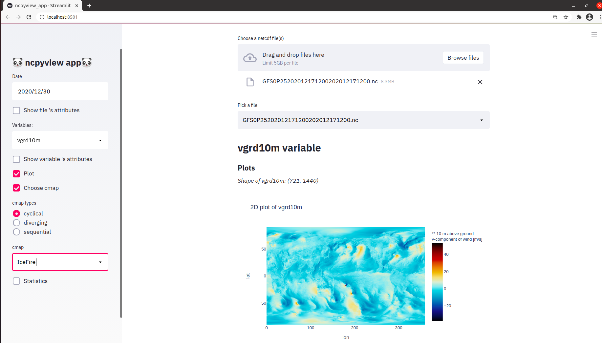

Welcome to ncpyview’s documentation!
Indices and tables
Description
ncpyview is an interactive web application to read data from netcdf files, process and visualize them.
Installation
Open a terminal in linux operating system
Clone the repository to your work disk;
git clone https://github.com/Wassim-Fkaier/ncpyview.git
Change the directory to the newly cloned repository ncpyview;
cd ncpyview
Install the program;
make install
Run the application
Open a terminal and run the app;
ncpyview
This will open the application locally.
Now the files can be uploaded to read and visualize the data.